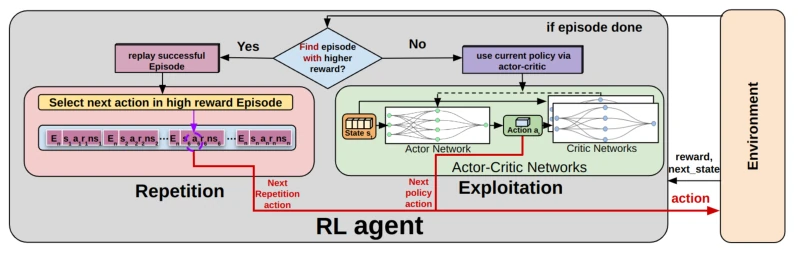
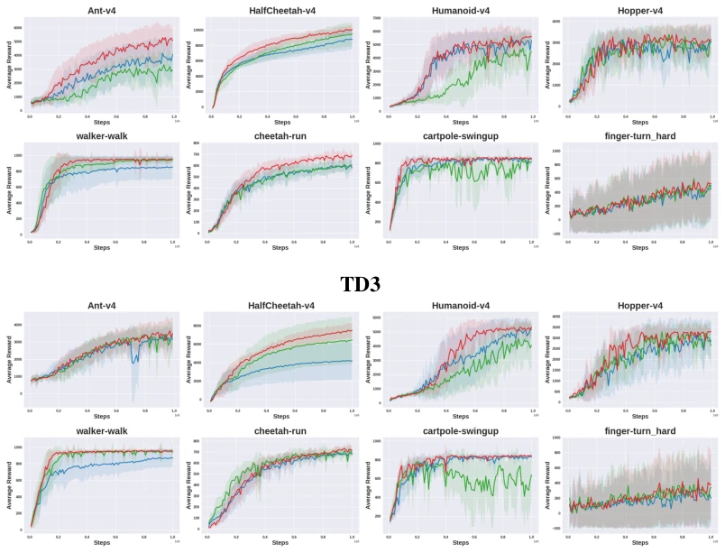
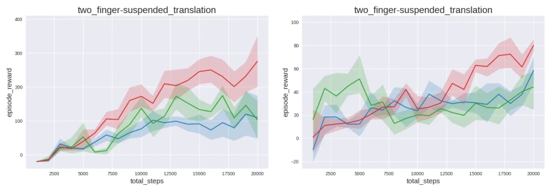
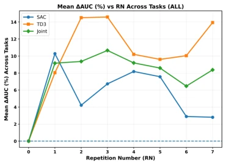
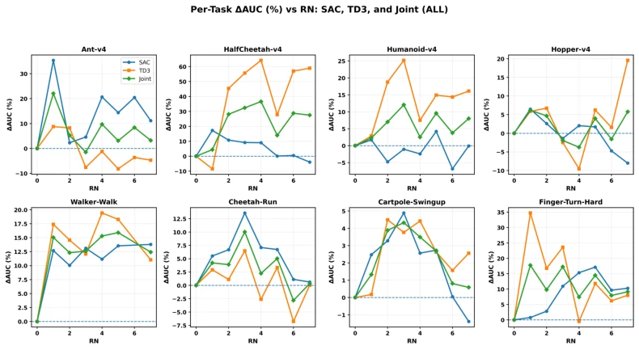
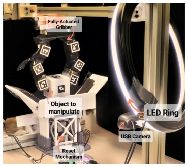
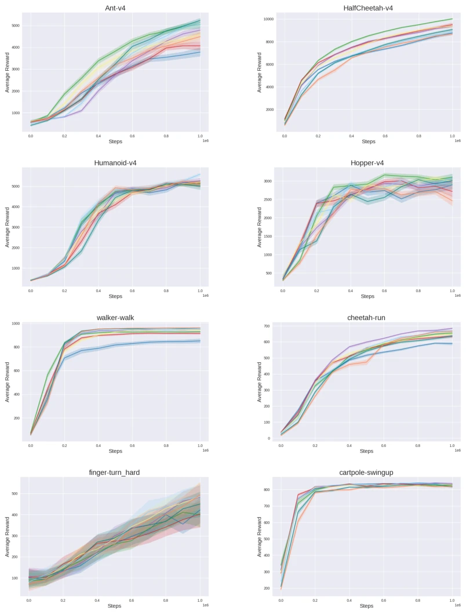
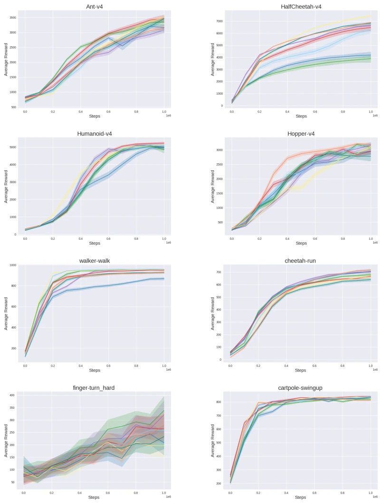
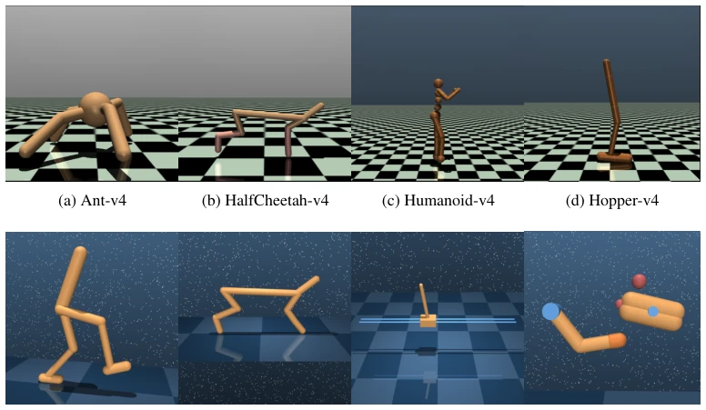
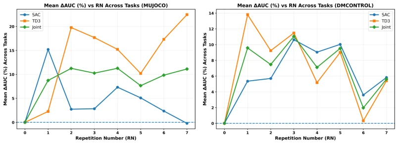

This paper delivers a vivid "biology lesson" to the RL community: since humans consolidate memory by repeating successful actions, why not AI? The IER mechanism proposed by the authors is straightforward and blunt: once an Agent discovers a high-reward trajectory, it immediately repeats it in place several times. This approach is indeed effective, outperforming baselines on both MuJoCo and real robotic arm tasks. However, essentially, this is a variant of "Experience Replay", merely changing "passive storage" into "active repetition". Although the authors emphasize this is an "interaction-level" intervention, sounding sophisticated, upon closer thought, isn't it just forcibly feeding high-value data back into the environment during the collection phase? For deterministic policies like TD3, excessive repetition can easily lead to local optima, which the paper also acknowledges. Overall, this is a smart approach of "trading simplicity for efficiency", but do not expect it to solve all sample efficiency problems, after all, even a record player gets tired of repeating.
研究动机Motivation
强化学习（RL）面临的最大痛点就是样本效率低，现实世界中交互成本高昂，而现有算法往往需要数百万次尝试才能收敛。虽然Experience Replay（Lin, 1992）和Self-Imitation Learning (SIL, Oh et al., 2018) 等机制试图复用经验，但它们本质上是“被动”的：SIL仅在训练更新时从回放缓冲区采样高回报轨迹，并不改变Agent在环境中的实际行为模式。这意味着，即使Agent偶然做对了，它也不会立刻重复这个动作来巩固技能，导致高价值行为在交互过程中被稀释。神经科学研究表明，生物体通过重复成功行为来强化突触连接（Schultz et al., 1997; Hebb, 2005），而现有RL方法忽略了这种“即时重复”的强化机制。因此，如何在不修改网络架构的前提下，让Agent在交互过程中主动重复高回报序列，成为提升样本效率的关键。
The biggest pain point facing Reinforcement Learning (RL) is low sample efficiency; interaction costs in the real world are high, and existing algorithms often require millions of attempts to converge. Although mechanisms such as Experience Replay (Lin, 1992) and Self-Imitation Learning (SIL, Oh et al., 2018) attempt to reuse experiences, they are essentially "passive": SIL only samples high-reward trajectories from the replay buffer during training updates and does not change the Agent's actual behavior pattern in the environment. This means that even if the Agent accidentally does the right thing, it will not immediately repeat this action to consolidate skills, causing high-value behaviors to be diluted during the interaction process. Neuroscience research indicates that organisms strengthen synaptic connections by repeating successful behaviors (Schultz et al., 1997; Hebb, 2005), while existing RL methods ignore this "immediate repetition" reinforcement mechanism. Therefore, how to enable the Agent to actively repeat high-reward sequences during the interaction process without modifying the network architecture has become key to improving sample efficiency.

Figure 1: Illustration of the Instant Episode Repetition Algorithm: At the end of each episode (when done is true), if the agent identifies an episode with a high reward, it immediately initiates repeti- tion by executing the actions from that episode sequentially, from start to end, for RN repetitions within the environment.
The core idea of IER (Instant Episode Repetition) is to embed the "repetition" mechanism directly into the Data Collection phase, rather than using it only in the training phase. The overall process is as follows: The Agent executes a policy in the environment; when an Episode ends, the system calculates the cumulative reward of that episode. If the current reward exceeds the historical maximum record (r_max), the system immediately triggers "repetition mode". In the subsequent RN consecutive Episodes, the Agent no longer samples actions from the current policy πθ, but instead forcibly executes the high-reward action sequence a* recorded in the previous episode. If a new record is not reached or the repetition count is exhausted, the Agent resumes normal policy sampling. All generated data (including data produced by repetition) is still stored in the Replay Buffer for standard Off-policy updates. Key innovations lie in: 1. Interaction-level intervention: Unlike SIL which only affects gradient updates, IER directly changes the Agent's behavior distribution in the environment, increasing the sampling density of high-value state-action spaces. 2. Variant condition execution: Although the action sequence is fixed, the initial state (s0) for each repetition is resampled from the reset distribution, ensuring repetition occurs under slightly different initial conditions, avoiding complete trajectory cloning and retaining necessary diversity (Bernstein, 1967). 3. Zero architecture modification: This method is completely decoupled from network structure, can be seamlessly integrated into mainstream Off-policy algorithms like SAC, TD3, without modifying loss functions or network layers.
实验Experiments
实验在MuJoCo、DeepMind Control Suite的8个连续控制任务以及一个真实的机械手动态物体平移任务上进行。基线包括标准SAC/TD3以及集成SIL的变体（SIL-SAC, SIL-TD3）。评测指标为平均累积回报和收敛速度。结果显示，IER-SAC在6/8个模拟任务中显著优于基线，IER-TD3在6/8个任务中表现更好，且在真实任务中收敛更快。消融实验分析了复读次数RN的影响，发现RN=3时效果最佳（平均提升约10.66%），RN过大导致多样性下降，RN过小则强化不足。值得注意的是，TD3对RN更敏感，而SAC由于熵正则化对重复的容忍度更高。这表明IER能有效提升样本效率，但需根据算法特性调整超参数。
Experiments were conducted on MuJoCo, 8 continuous control tasks in the DeepMind Control Suite, and a real robotic hand dynamic object translation task. Baselines include standard SAC/TD3 and SIL-integrated variants (SIL-SAC, SIL-TD3). Evaluation metrics are average cumulative reward and convergence speed. Results show that IER-SAC significantly outperforms baselines in 6/8 simulated tasks, IER-TD3 performs better in 6/8 tasks, and converges faster in real tasks. Ablation experiments analyzed the impact of repetition count RN, finding RN=3 yields the best effect (average improvement of about 10.66%), RN too large leads to decreased diversity, RN too small leads to insufficient reinforcement. Notably, TD3 is more sensitive to RN, while SAC has higher tolerance for repetition due to entropy regularization. This indicates IER can effectively improve sample efficiency, but hyperparameters need to be adjusted according to algorithm characteristics.

Figure 3: Performance comparison of Baseline, SIL, and the proposed IER method across eight continuous- control tasks under SAC (top) and TD3 (bottom). Curves show the mean episodic return over five independent seeds, and shaded regions represent the standard deviation across five random seeds.

Figure 4: Performance comparison of standard, SIL-enhanced, and IER-enhanced SAC and TD3 variants in the real-world gripper manipulation task. Curves show the mean episodic return over five independent seeds, and shaded regions represent the standard deviation across five random seeds.

Figure 5: Mean ∆AUC% across all eight tasks as a function of the RN, jointly averaged over SAC and TD3.

Figure 6: Per-task ∆AUC% as a function of the Repetition Number (RN), from RN0 (no repetition) to RN7, for SAC and TD3.
其他图片Other Figures

Figure 2: Real-world setup for dynamic object translation. The cube must be moved laterally while suspended in the air by a custom-built gripper.

Figure 7: Impact of repetition number RN on IER-SAC performance across all tasks, showing how repeated execution of the highest-reward episode affects learning. Curves show the mean episodic return over ten independent seeds and are smoothed using a sliding window of size 5 for visual clarity.

Figure 8: Impact of repetition number RN on IER-TD3 performance across all tasks, showing how repeated execution of the highest-reward episode affects learning. Curves show the mean episodic return over ten independent seeds and are smoothed using a sliding window of size 5 for visual clarity.

Figure 9: tasks used in our experiments.

Figure 10: Mean ∆AUC% across environment groups. Left: MuJoCo tasks. Right: DeepMind Control tasks.